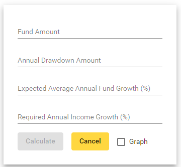

Pension Drawdown Calculator
This can be used to test income against time for a given initial pension pot, starting annual income, expected
appreciation of the fund with the required annual increase in income.
The figures are entered on the input form.
